Request for publish
Every path walked in the running admin, plus what changed in the domain model.
The model, in one paragraph
A request collects two different things and no longer pretends they are the same. People approve
— their count is the gate, set by required_human_approvals. Checks report —
they run over the message bus so a slow one (an LLM, a remote service) does not hold the request open, and they never
count as an approval. A check marked blocking: true holds the request until it passes; by default a check
is informational.
Two entities instead of one
The old single WorkflowTransitionRequestReviewer row carried a person or a validator behind two
nullable columns and an isValidator() branch in seven places. It is now two:
WorkflowTransitionRequestApproval | WorkflowTransitionRequestCheck | |
|---|---|---|
| identity | user (required) | validatorKey (required) |
| states | approved / rejected | pending / passed / failed |
| gate | counts towards the gate | blocking decides |
| row exists | once the person decided | from the moment the request is made |
Both dropped AuditableTrait: user/validatorKey and decidedAt
already say who and when, so four columns and two foreign keys went with it. The request itself dropped
requestedAt, which duplicated created. Tables moved from wt_* to
ct_*.
co_ was the obvious guess for "content" and is wrong — it is already
the ContactBundle's prefix (co_contacts, co_accounts). Caught it when the schema update put
the new tables next to the contact ones. ct_ is free.
The API payload follows
{
"status": "pending",
"approvalProgress": { "required": 2, "approved": 1, "rejected": 0 },
"checks": [ { "validatorKey": "unpublished_references", "blocking": true, "status": "passed", ... } ],
"approvals": [ { "reviewer": { "fullName": "Reviewer_one Workflow" }, "status": "approved", ... } ]
}
One list with a type discriminator became two, which is what the admin was already rendering.
Row states
| Marker | State | Meaning |
|---|---|---|
| passed / approved | a check passed, or a person approved | |
| failed / rejected | a check reported a problem, or a person rejected | |
| pending (grey) | a check has not answered yet | |
| waiting (amber) | an approval no person has given yet |
A check never borrows a person's wording: it reads Passed, Reported a problem or Has not answered yet, not Approved these changes. A check that is holding the request says Must pass before publishing, so a reader never has to work out which one is in the way.
The walkthrough
1Pre-validators block before anything is written
SEO emptied, then "Save and request for publish". Every configured check gets a row, the passed one included. Nothing was written: no request exists and the form stays editable.
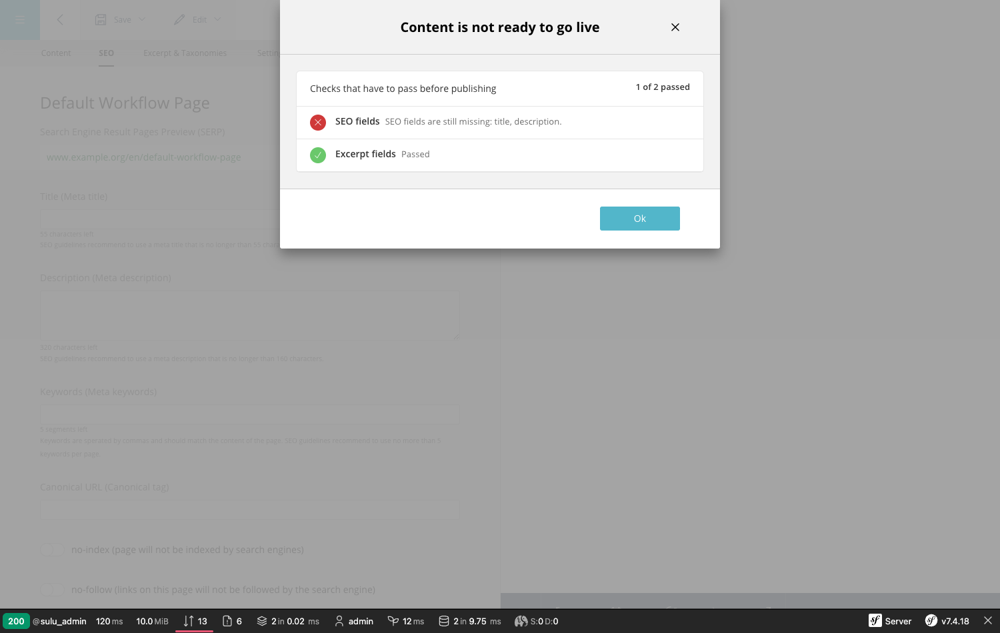
publish and bypass_publish, so publishing cannot walk around it.2SEO restored, request created
The form locks, the banner offers to withdraw. Server state:
place: review_draft, status: pending, one check already passed,
approvals: [], gate 2.
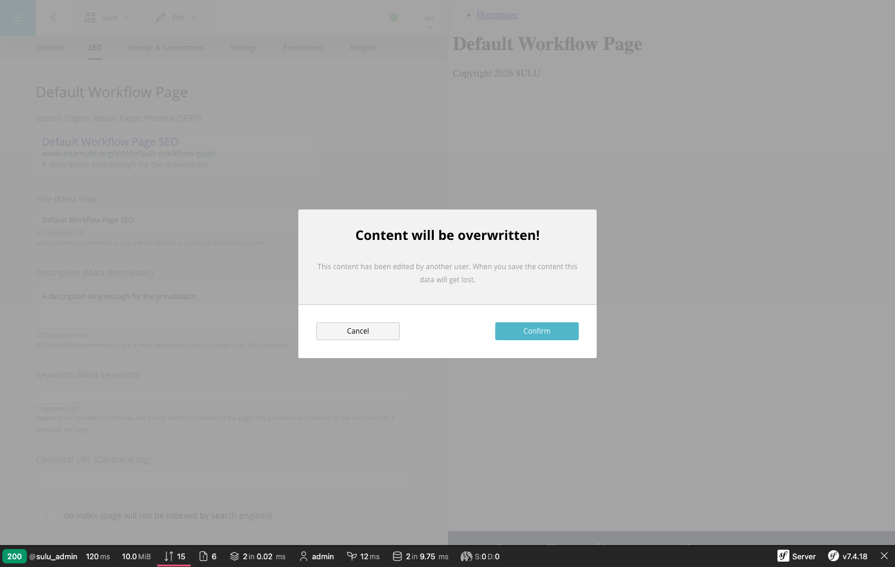
3The overlay, two sections
Automated checks first, then the people. The author sees the notice instead of buttons — you cannot review your own request.
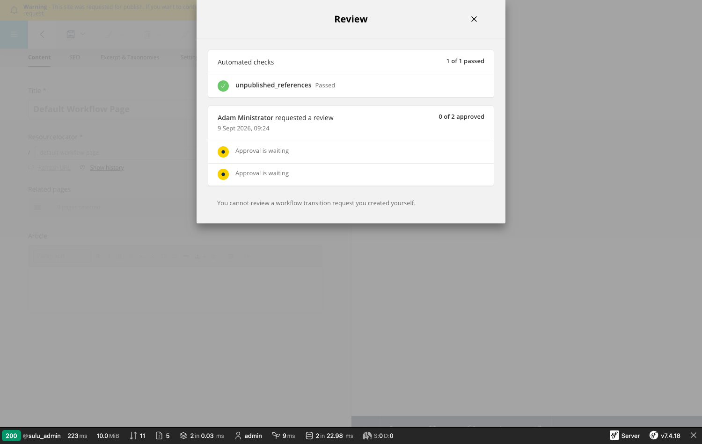
4A reviewer can act
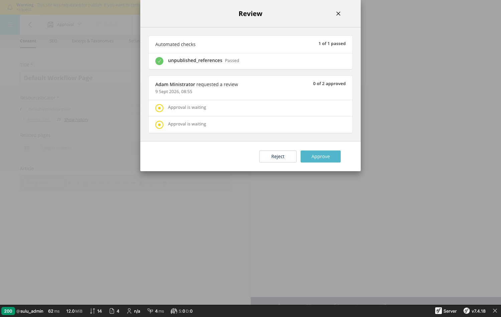
5Approving with a comment
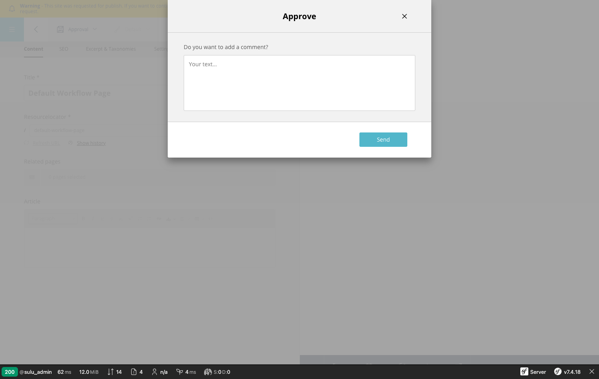
6First approval, comment as a speech bubble
The first three lines are always visible; a longer comment ends in an ellipsis and expands on click. The tail points at the name of whoever wrote it, and the status caption sits beside the name.
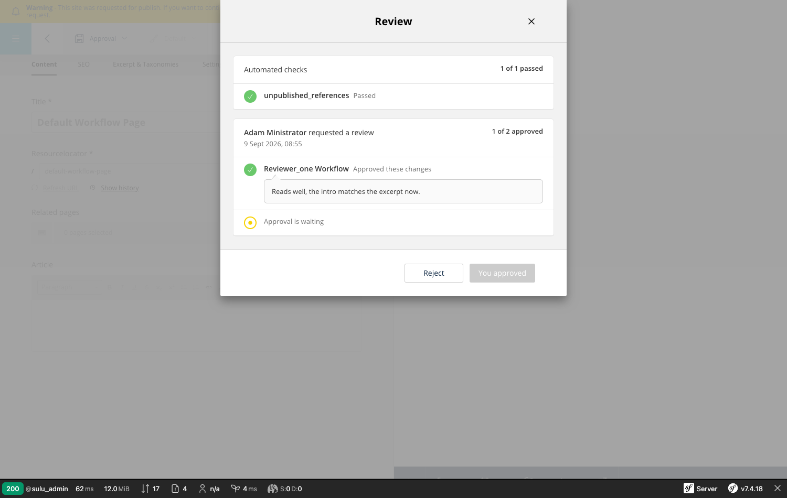
7Second approval reaches the gate
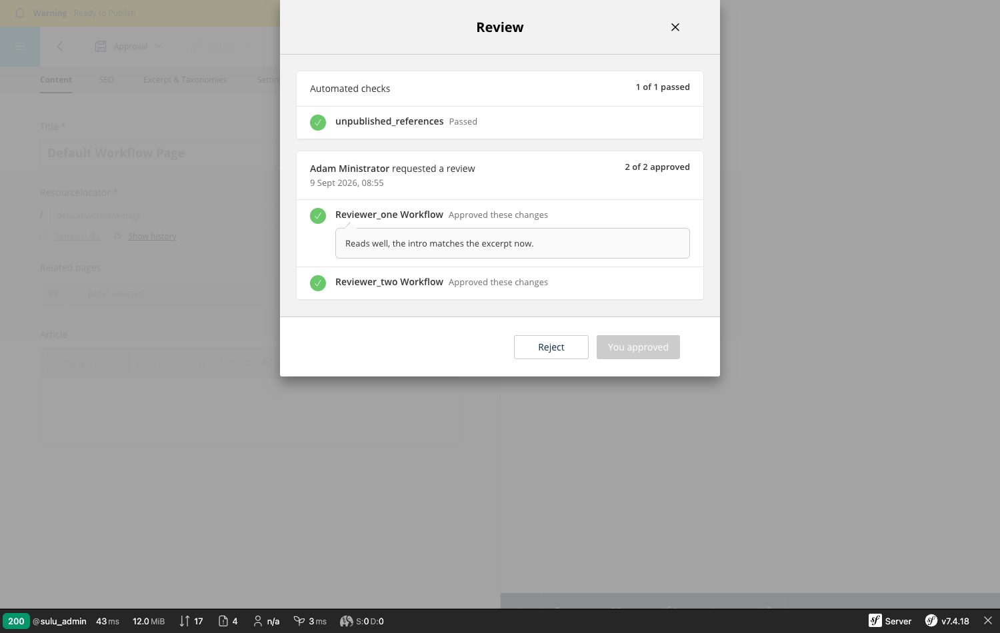
status: approved, progress 2 of 2.8A failing blocking check pulls it back
The new blocking flag, proven: both people have approved, and the request is still
pending because the blocking check failed. Before this change a validator's rejection did nothing at
all.
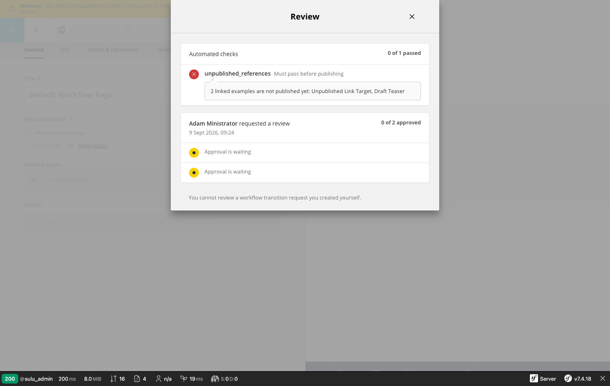
9Check passes, ready to publish
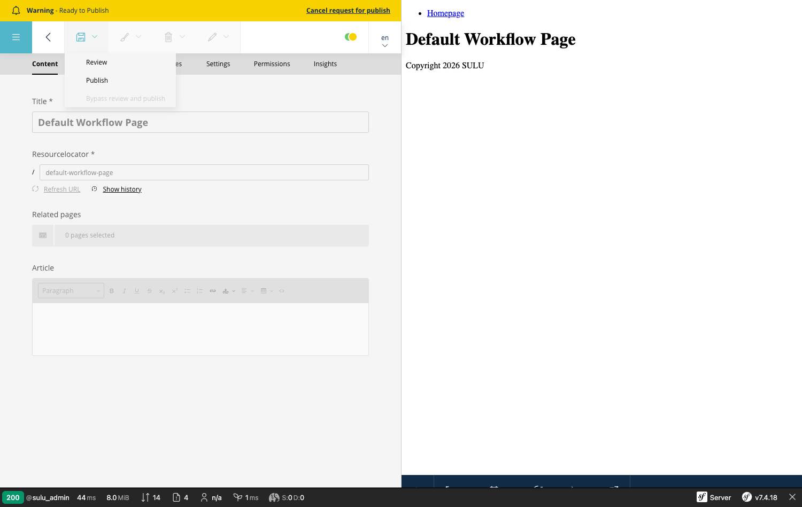
10Published
active_key nulled, so the next request is free to be made.11The history stays
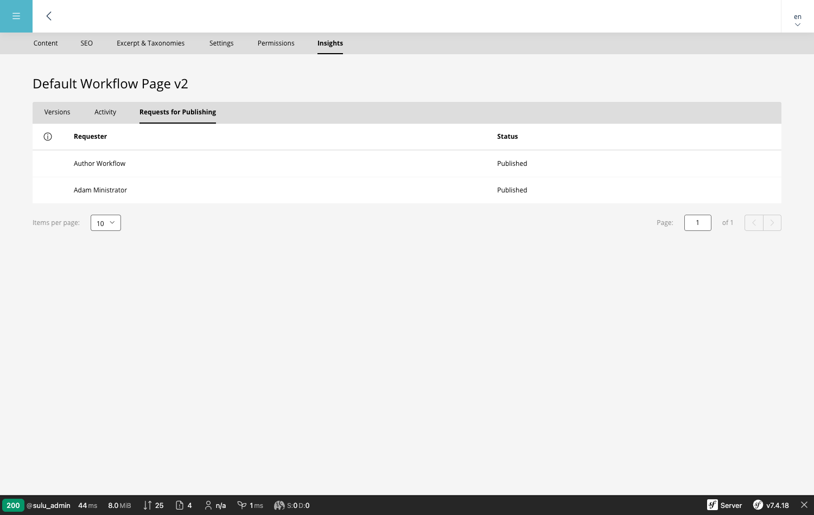
Permissions, exercised against the live API
Not asserted in a test — actually called, each as a different logged-in user.
| User | Holds | publish | bypass_publish |
|---|---|---|---|
wf_editor_no_review | view, edit | 403 | 403 |
wf_author with an approved request | view, add, edit | 200 | — |
wf_publisher | view, add, edit, review, live | 200 | 200 |
sulu:page:initialize (CLI) | no user at all | runs, unauthorized path skipped | |
An approval delegates the publish right for that one request: edit is enough to carry out what the
reviewers signed off, and only while that approved request is the active one. The same user without a request is
refused.
Who may do what
| Action | Permission | Why |
|---|---|---|
| Request for publish | edit | it is a save with an ask attached |
| Withdraw the request | edit | frees the content for editing again |
| Re-run a failed check | edit | not a verdict — it is how the author clears a check after fixing the content |
| Approve / reject | review | a verdict on someone else's work |
| Publish an approved request | edit | the approval delegates the right for that one request |
| Publish without a request, or past one | live | publishing on your own authority |
The live holder is never forced through the review: on content that has a workflow but no open
request, the Save dropdown still offers Publish and Save and publish. Those send
bypass_publish rather than publish, because plain publish is guarded on an
approved request — same button, honest transition underneath.
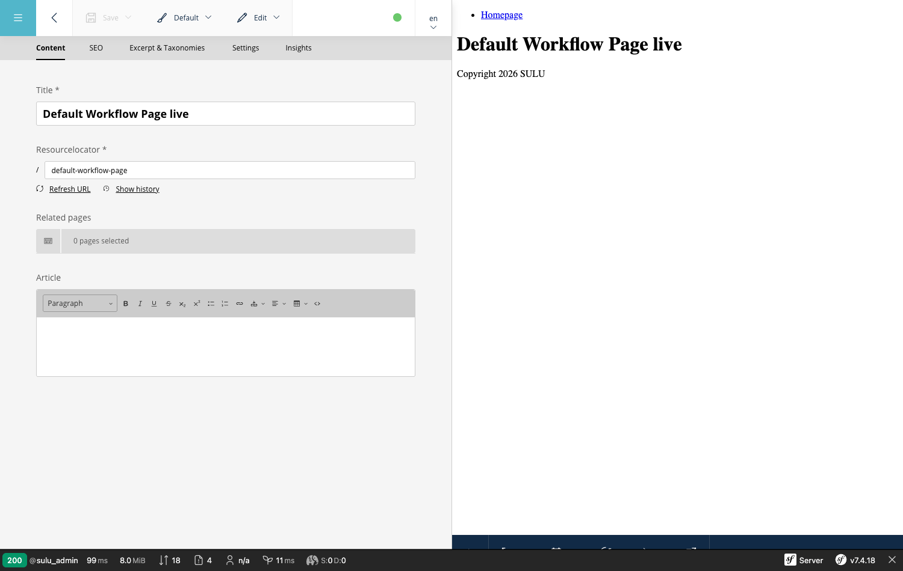
Retry sitting with edit matters: a blocking check that failed holds the request, and the person
who can fix the content is the author, who by definition may not review their own request. Before this it took a
reviewer to clear it.
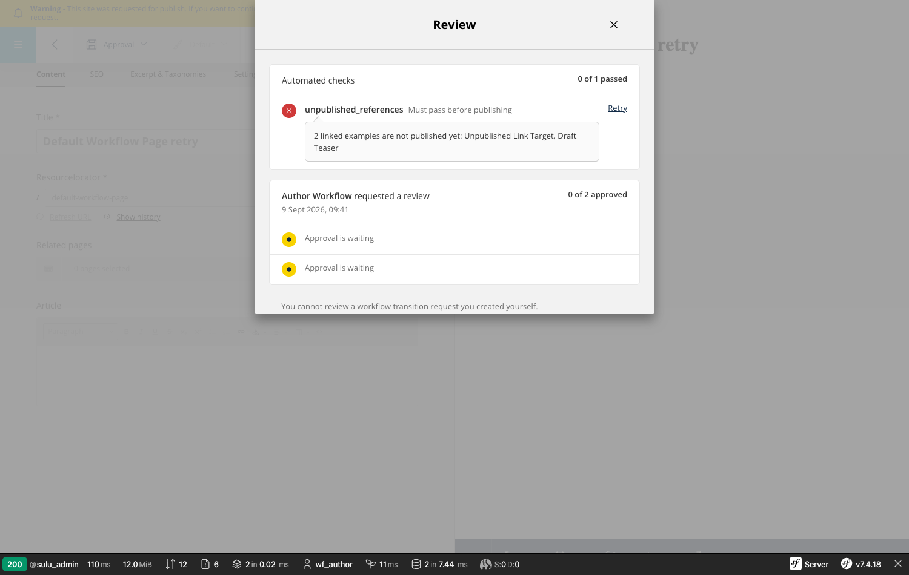
edit but not review: the overlay opens and offers
Retry, the decision buttons stay away, and the self-review notice explains why.One button while a request is open
Everything you can do to an open request happens inside the overlay, so the toolbar shows a single Review button rather than a dropdown of half-disabled entries. Publishing an approved request and publishing past an unfinished one are buttons in the overlay's footer.
This is what the dropdown was hiding: those entries were gated on live, so an editor whose
request had been approved — the person the approval was granted to — had no way to publish it in the
UI at all, even though the server allowed it.
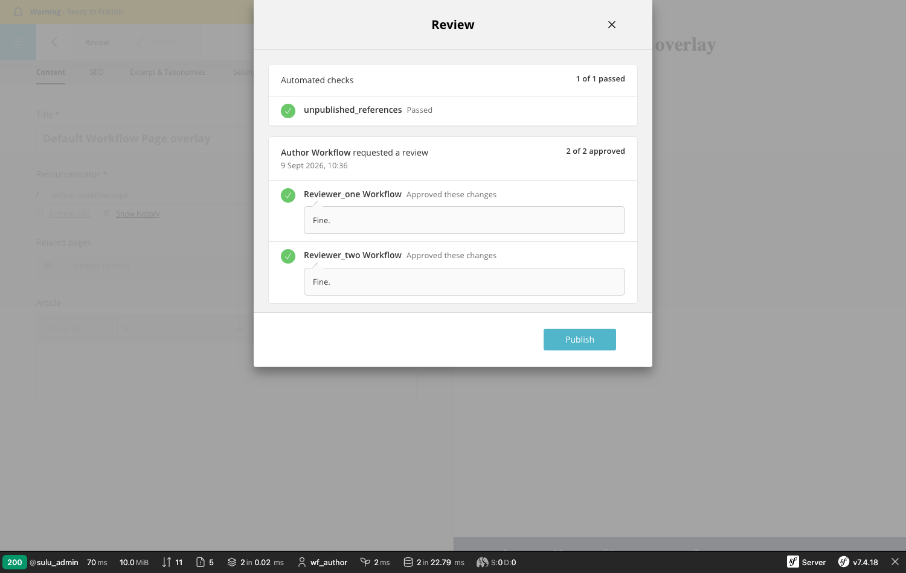
edit: no Approve or Reject, but Publish, because two
reviewers signed the request off. Clicking it took the page live and closed the request.Also in this pass
- Authorization moved out of the controllers into the three
ApplyWorkflowTransition*message handlers, so every caller of the bus is covered rather than only the HTTP entry point. - Nine colour variables deleted. The branch had added its own red, green, amber and three greys next to Sulu's existing ones; they now map onto the palette that was already there.
- One "active request" lookup instead of seven hand-written copies of the same filter.
- An N+1 fixed in the requests list: checks and approvals preload in one query.
- Application stopped translating. Pre-validation messages travel as keys and are rendered by the serializer, which is the only layer that knows the request's locale.
UPGRADE-3.x.mdpruned of renames that only ever existed inside this branch.
Verified
719 PHP unit tests, 472 jest tests, eslint, flow, stylelint and dependency-cruiser all pass. Every screenshot above is a real state of the running app, and the permission table is live HTTP responses.